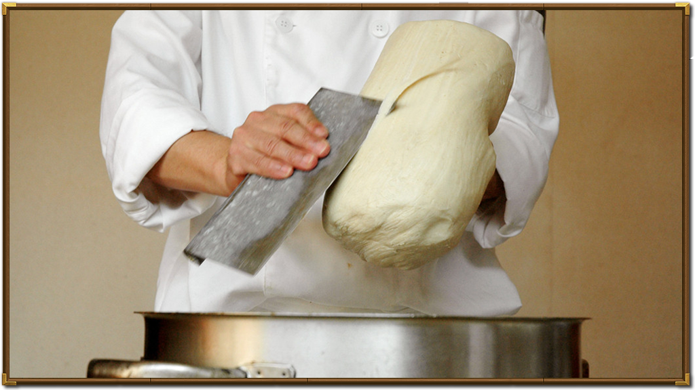

您现在的位置 面面俱到->文化研究->历史发展
历史发展


刀削面是山西晋中地区面食中最具代表性的面食，也是中国最具代表性的经典面食，而他的产生却是迫于生计。相传是蒙古鞑靼侵占中原的时候，为防止老百姓起义、闹事，于是就规定三五户人家只允许留一把菜刀。一天，老伴让老头做饭，于是，他就到外面去借刀去。结果，借了半天也借不到这个刀，在回家路上，心里非常不高兴，突然被一个硬物绊了一下，低下头一看，结果是一个铁片。 于是他就把这个金属片揣到怀里拿回了家。
回家老伴问他刀借到了没有，他说没有。但是他却从怀里拿出一块铁片来。老伴以为他是要用这个要去做饭，于是就骂他，你这是瞎侃！用我们的方言讲，瞎侃就是胡吹的意思。结果这个瞎侃提醒了老头，于是他灵机一动，拿起这个铁片跑到外面石头上磨了几下，拿回来就将面一下一下地砍到锅里，于是，刀削面就产生了 。
接下来这样制作面食的方法便传播开来，最早的铁片砍面便从家庭传到了街头摊贩，最终传遍了晋中大地。
山西人对于面食的加工、制作在全国是独树一帜的，他们别出心裁，对面食的制作方法、制作工具、配料等大胆创新，使得山西面食得以逐步的发展。但是最初的发展并非文化的发展，也更谈不上创新，只是迫于生计之举。
相传在公元13世纪，意大利人马可•波罗两次来到山西晋中地区，然后沿着"丝绸之路"将山西面食传入意大利。后来，有着很重东方情结的意大利人也喜欢上了面条，将面条种类发展到了四百多种，大多是空心面，粗的象手指头，细的像头发丝。风靡世界的意大利"通心粉"，就在这种背景下产生了。
面条的引进，把游牧文化对于面粉的单一塑造——面包，拓宽到一个新的领域，就像西方人说的：既多了一种吃的方法，又解决了面粉的储存问题。就这样，山西人最终把面食推出了国门。